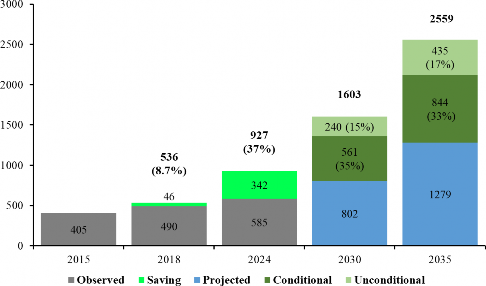
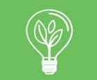
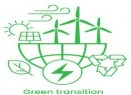
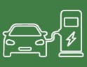
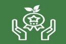
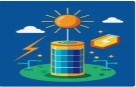
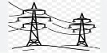
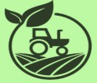
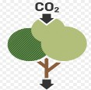
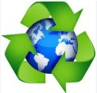

ACE |
Action for Climate Empowerment |
ADB |
Asian Development Bank |
AF |
Adaptation Fund |
AFOLU |
Agriculture, Forestry and Other Land Use |
ANR |
Assisted Natural Regeneration |
AV |
Autonomous Vehicles |
AWD |
Alternate Wetting and Drying |
BAU |
Business-As-Usual |
BESS |
Battery Energy Storage Systems |
BRT |
Bus Rapid Transit |
BTR |
Biennial Transparency Report |
CBAMRC |
Carbon Border Adjustment Mechanism |
|
CBDR&RC |
Common but Differentiated Responsibilities and Respective Capabilities |
CBDRM |
Community-Based Disaster Risk Management |
ccGAP |
Climate Change Gender Action Plan |
CCUS |
Carbon Capture, Utilization, and Storage |
CMA |
Conference of the Parties serving as the meeting of the Parties to the Paris Agreement |
COP |
Conference of the Parties |
CRI |
Climate Risk Index |
CSA |
Climate-Smart Agriculture |
CTCN |
Climate Technology Centre and Network |
EbA |
Ecosystem-based Adaptation |
EMS |
Energy Management Systems |
ETF |
Enhanced Transparency Framework |
EV |
Electric Vehicle |
FTC |
Finance, Technology transfer, and Capacity-building |
GCF |
Green Climate Fund |
GCISC |
Global Climate-Change Impact Studies Centre |
GEDSI |
Gender Equality, Disability, and Social Inclusion |
GEF |
Global Environment Facility |
GHG |
Greenhouse Gas |
GIS |
Geographic Information System |
GLOF |
Glacial Lake Outburst Flood |
GWP |
Global Warming Potential |
ICTU |
Information to facilitate Clarity, Transparency and Understanding |
IGCEP |
Indicative Generation Capacity Expansion Plan |
ILO |
International Labour Organization |
IPCC |
Intergovernmental Panel on Climate Change |
IPPU |
Industrial Processes and Product Use |
IoT |
Internet of Things |
ITS |
Intelligent Transport Systems |
IWRM |
Integrated Water Resource Management |
JTWP |
Just Transition Work Programme |
KPI |
Key Performance Indicator |
LULUCF |
Land Use, Land-Use Change, and Forestry |
MDB |
Multilateral Development Bank |
MoCC&EC |
Ministry of Climate Change and Environmental Coordination |
MRFs |
Material Recovery Facilities |
MRV |
Measurement, Reporting, and Verification |
NAP |
National Adaptation Plan |
NCCP |
National Climate Change Policy |
NDC |
Nationally Determined Contribution |
ND-GAIN |
Notre Dame Global Adaptation Initiative |
NDMA |
National Disaster Management Authority |
NEV |
New Energy Vehicle |
NTDC |
National Transmission & Despatch Company |
PA |
Paris Agreement |
P2P |
Peer to Peer |
PCCA |
Pakistan Climate Change Act / Pakistan Climate Change Authority |
PDMAs |
Provincial Disaster Management Authorities |
PPP |
Public-Private Partnership |
PSDP |
Public Sector Development Programme |
RE |
Renewable Energy |
SDG |
Sustainable Development Goal |
TES |
Thermal Energy Storage |
UAV |
Unmanned Aerial Vehicles |
UGPP |
Upscale Green Pakistan Programme |
UNFCCC |
United Nations Framework Convention on Climate Change |
V2G |
Vehicle to Grid |
WASH |
Water, Sanitation, and Hygiene |
WHR |
Waste Heat Recovery |
Pakistan is ranked as the most climate-affected country in the world for the year 2022, despite being the 178th per capita (2.3 tonnes of CO₂e) contributor to GHG emissions. The country is experiencing disproportionate impacts of climate change, including accelerated glacial melt, recurrent and devastating floods, prolonged droughts, rising temperatures, shifting rainfall patterns, and sea-level rise. These climate-induced risks directly threaten human lives, agriculture and food security, water resources, ecosystems, and economic growth. Addressing climate change is, therefore, a national survival and development priority for Pakistan.
In fulfillment of its obligations under the United Nations Framework Convention on Climate Change (UNFCCC) and its Paris Agreement, Pakistan has prepared its third Nationally Determined Contribution (NDC 3.0). This submission represents an ambitious and forward-looking strategy to integrate both mitigation and adaptation measures into national development pathways. It outlines actions across energy, industry, agriculture, forestry, waste, water, health, education, housing, and other social sectors to ensure resilience, sustainability, and inclusivity.
Pakistan remains on track to achieve its target of reducing projected emissions by 50% between 2015 and 2030, 15% through domestic resources and an additional 35% contingent on international financial support; however, the required international financial support has not been received. Through NDC3.0, Pakistan would like to voluntarily reduce its GHG emissions up to 50% by 2035. Of this, 17% will be achieved unconditionally through domestic resources and policy measures, while the remaining 33% is conditional on the provision of adequate mostly grant-based or concessional international climate finance, complemented by technology transfer and capacity- building support. The estimated investment required to achieve these goals is USD 565.7 billion. According to World Bank’s Pakistan Country Climate and Development Report 2022, an indicative estimation of total investment needs for Climate-resilient and Low-Carbon development up to 2023 are USD 348 billion. The additional investment of USD 217.7 billion will be required by 2035.
The National Economic Transformation Plan (2024-2029) also known as the ‘URAAN Pakistan’ provides the overarching development pathway for integrating climate action into Pakistan’s economic and social agenda. It ensures that climate commitments are not treated in isolation, but as drivers of sustainable growth, resilience, and green transformation. Given Pakistan’s acute vulnerabilities and the capital-intensive transition required for low carbon transition, financial support remains a critical enabler. Pakistan seeks enhanced access to international climate finance from both public and private sources, aligned with principles of equity and common but differentiated responsibilities. The country also intends to employ the cooperative approaches and market mechanisms available under Article 6 of the Paris Agreement, creating opportunities for enhanced ambition, innovation, and cost-effective emissions reductions.
NDC 3.0 reflects Pakistan’s dual approach: pursuing low carbon transition while building resilience against climate shocks. The submission emphasizes that the scale of ambition is far beyond what can be achieved through domestic capacity alone. Therefore, international cooperation, technology partnerships, and financial assistance are indispensable to enable Pakistan to deliver on its commitments while safeguarding human development gains.
1. INTRODUCTION
The Paris Agreement sets the objective of limiting the rise in global average temperature to well below 2°C above pre-industrial levels, while pursuing efforts to restrict the temperature increase to 1.5°C above pre-industrial levels. In line with this global commitment, and consistent with Article 4 of the Paris Agreement and the subsequent decisions of the Parties, this submission outlines Pakistan’s Nationally Determined Contribution (NDC3.0) towards achieving these targets.
Pakistan’s third Nationally Determined Contribution (NDC3.0) is a renewed and stronger plan to tackle climate change. It builds on earlier commitments and provides a clear framework that combines two important goals: reducing greenhouse gas (GHG) emissions and adapting to the impacts of climate change. The document sets out a roadmap for cutting emissions, improving resilience against climate risks, and mobilizing finance, technology, and skills in line with both national development needs and international climate agreements.
NDC 3.0 was developed through a “whole-of-nation” approach, meaning that voices from different sectors of society were included in its preparation. The process brought together federal ministries, provincial governments, civil society, academia, young people, and the private sector. By involving such a wide range of stakeholders, the NDC reflects not just government priorities but also the concerns and contributions of communities, experts, and businesses. This inclusive approach has helped build broad support and ownership of the commitments, which is essential for effective implementation.
The NDC also connects strongly with Pakistan’s development agenda and the Sustainable Development Goals (SDGs). It emphasizes that addressing climate change is not only about protecting the environment but also about ensuring food security, safeguarding water resources, preserving glaciers, reducing poverty, and creating opportunities for green growth. By integrating climate action into development priorities, Pakistan aims to shift toward a low-carbon and climate-resilient future.
In simple terms, NDC 3.0 is Pakistan’s national climate action plan for the coming years. It sets ambitious targets, encourages cooperation across society, and aligns the country’s climate response with both domestic needs and global responsibilities. If fully implemented, it can help Pakistan build resilience, reduce emissions, and move toward a more sustainable and secure future for its people.
2. NATIONAL CLIMATE CHANGE CONTEXT
Pakistan is caught in a troubling paradox: it contributes very little to global GHG emissions, but it has consistently been ranked among the countries most severely affected by climate change. The country accounts for only about 1% of total global GHG emissions, and its per-capita emissions (2.3 tonnes of CO₂e per person) remain well below the world average1.
The Global Climate Risk Index (CRI) by Germanwatch ranked Pakistan among the top ten most affected countries over the past two decades and, in its 2025, report placed Pakistan as the most devastated country in 2022 on account of 2022 floods, with damages and reconstruction costs of more than USD 30 billion, displacement of more than 8 million people, and fatalities of around 1,700 people2. The assessment also found that the floods disproportionately impacted the poorest households in the poorest areas. Other global assessments point to the similar trends. According to the 2023 Notre Dame Global Adaptation Initiative (ND-GAIN), Pakistan ranks 150th in readiness and 146th in vulnerability. This reflects both the country’s vulnerability and its limited capacity to adapt effectively to climate risks3.
Together, these indicators paint a clear picture: Pakistan contributes little to the problem of global warming but suffers disproportionately from its impacts. With weak adaptive capacity, the country finds itself on the frontline of climate disasters, experiencing extreme weather events, such as glacial melting and flooding etc. This paradox underscores the urgent need for stronger national resilience efforts and increased global support by upholding the principles of equity and common but differentiated responsibilities and respective capabilities (CBDR&RC) to help Pakistan confront the escalating climate crisis.
2.1 Pakistan’s Commitments under the Paris Agreement
Pakistan ratified the Paris Agreement (PA) in September 2016, thereby assuming its role as a legally bound Party committed to advancing the collective global response to climate change. Through this ratification, the country affirmed both its legal and political commitment to support the global efforts to limit the rise in average global temperature to well below 2°C above pre-industrial levels, while striving to pursue the more ambitious target of 1.5°C. In line with Article 4 of the Paris Agreement, the countries are required to prepare, communicate, and maintain successive Nationally Determined Contribution (NDC) that represent their highest possible ambition and demonstrate progression over time. These obligations, as set out in PA, span several key areas. First, Pakistan is required to prepare and submit updated NDC every five years, each reflecting increased ambition compared to the previous submission, in accordance with Articles 4.2 and 4.3. Second, it must implement domestic policies and actions consistent with achieving its NDC targets, guided by legislative and policy frameworks such as the Pakistan Climate Change Act (PCCA) 20174 and the updated National Climate Change Policy (NCCP, 2021)5. Third, the country is required to submit Biennial Transparency Reports (BTRs) under the Enhanced Transparency Framework (ETF) (Article 13) to track progress towards its commitments, which the country submitted in June 20256. Fourth, Pakistan participates in the Global Stock-take process (Article 14) every five years to evaluate the collective progress made in achieving the agreed goals. Finally, it engages with the transparent, non-adversarial and non-punitive compliance mechanism under Article 15, aimed at facilitating implementation of the provisions of the Paris Agreement.
Pakistan’s NDC 3.0 reflects a strong political commitment at both domestic and international levels. At the national level, its climate goals are intertwined into key laws and policies that guide the country’s response to climate change. The updated National Climate Change Policy (NCCP, 2021) sets national strategies for adaptation and mitigation across sectors, such as energy, transport, water, agriculture, waste, and disaster management. The Pakistan Climate Change Act (PCCA) 2017 establishes core institutional architecture for climate governance, including the Climate Change Council, the Climate Change Authority and the Pakistan Climate Change Fund. NDC 3.0 is closely aligned with national development priorities and sectoral development plans, ensuring that climate action not only addresses environmental concerns but also supports economic growth and social well-being. Internationally, Pakistan stands as a vocal advocate for climate justice, calling for fair access to climate finance and stronger global support for adaptation and loss and damage, given the country’s acute vulnerability to climate impacts. It also champions cooperation in the development and transfer of climate technologies under the Paris Agreement’s mechanisms, actively engaging in negotiations at the Conference of the Parties (COP) to United Nations Framework Convention on Climate Change (UNFCCC).
2.2 Climate Impact and Vulnerability Profile
Pakistan is a fractional greenhouse gas emitter. On a per capita basis, Pakistan’s emissions stand at just 2.3 tons of CO2e placing it 178th out of 213 countries, highlighting its minimal carbon footprint. However, Pakistan is disproportionately impacted by climate hazards.
Scientific studies show that Pakistan is warming at a pace faster than the global average, with climate models projecting a significant increase in temperature under high- emission scenarios by the end of the century. The frequency and intensity of extreme climate events is projected to increase, increasing disaster risk particularly for vulnerable poor and minority groups7. This heightened vulnerability underscores an urgent need for urgent global mitigation and national adaptation strategies.
Consequently, the country faces severe climate impacts owing to its geographic location, socio-economic conditions, and dependence on climate-sensitive sectors. The communities, across the country, are increasingly exposed to a spectrum of escalating climate hazards that vary in intensity and nature by region. In the northern mountains of Gilgit-Baltistan, new extreme maximum temperature records, hovering between 46 to 48 degrees centigrade, were set in Chilas and Bunji, leading to accelerated glacial melt, triggering glacial lake outburst floods, flash floods and landslides, which have claimed lives, destroyed vital infrastructure, and displaced communities8. The monsoon season in Pakistan has become increasingly erratic, reflecting the intensifying impacts of climate change. In 2022, the country experienced an unprecedented 175% above- normal rainfall, leading to catastrophic floods9. In 2025, the trend of climatic volatility continues, with rainfall already surpassing seasonal averages and underscoring the growing severity of monsoon patterns posing dangers to lives, livelihoods and infrastructure of the country. National Disaster Management Authority, a federal agency, which collects data from Provincial Disaster Management Authorities (PDMAs) shows more than 1,000 fatalities in the compounding climate hazards of 2025. These climate impacts cascade across environmental, social and economic domains, causing massive economic and non-economic losses and damages.
Several key sectors of Pakistan’s economy are highly climate-sensitive. The agriculture sector having a share of 23.54% in GDP10 and employing around 37.45% of the labor force11 is under growing pressure. Farmers face extreme heat and erratic rainfall, leading to water scarcity, which jeopardizes agricultural losses and overall welfare of the rural folk. Water scarcity is becoming challenging. Projections suggest that by 2050, glacial melting could reduce Indus River flows by 20–30%12. Groundwater levels are dropping rapidly, declining by up to 1 meter per year in Punjab, and a staggering 70% of aquifers in the province are over-exploited13. The dam storage capacity is also under stress, with Tarbela Reservoir losing more than 33% of its original storage capacity to sedimentation14, reducing its operational reliability and energy-generating capacity. Coastal and marine communities face escalating threats as well. Rising sea levels, salinity intrusion, and ocean warming are eroding fisheries and coastal livelihoods, exacerbating economic risks in already vulnerable regions. When climate shocks hit, whether through disrupted irrigation, unstable power generation, or declining fisheries, their impacts cascade across food markets, energy supplies, and the wider economy.
The impacts of climate change disproportionately affect marginalized groups. Smallholder farmers and livestock-dependent communities rely directly on climate- sensitive natural resources for their livelihoods. The urban poor, particularly those in informal settlements, lack resilient infrastructure to withstand extreme events. Women and children often bear a disproportionate burden during climate-induced displacement and periods of food insecurity. Indigenous and mountain communities remain especially vulnerable due to their reliance on fragile ecosystems and traditional water systems. Given this high vulnerability profile, Pakistan’s NDC emphasizes urgent adaptation measures to safeguard livelihoods, build resilience in critical sectors, and address the disproportionate climate burdens faced by marginalized communities. These priorities guide national climate action towards both protecting the most vulnerable and securing sustainable socio-economic development.
2.3 Alignment with National Priorities
Pakistan’s climate ambition is intertwined into the country’s broader vision for development and prosperity. The Pakistan Vision 2025 (Planning Commission, 2014) presented a national roadmap aimed at transforming the country into “a globally competitive and prosperous nation” by fostering inclusive, sustainable, and knowledge- based economic growth. Its seven pillars i.e. human capital sustained economic growth, energy–water–food security, private sector development, infrastructure connectivity, institutional reform, and security remain deeply relevant to current policy thinking. While Vision 2025 remains the guiding framework through 2025, implementation has been uneven due to political, economic, and institutional challenges. Recognizing this, the Government of Pakistan has launched “URAAN Pakistan” (2024–29)15 which is a successor initiative that updates Vision 2025’s priorities placing greater emphasis on climate resilience, green energy, digital transformation, social equity, and export-led growth. Together with the Sustainable Development Goals (SDGs), adopted nationally in 2016, these frameworks provide a coherent policy environment in which climate action is not a standalone agenda but an essential driver of national progress.
Pakistan’s adaptation and mitigation priorities are anchored in the National Climate Change Policy (NCCP) 2012, updated in 202116, and its Framework for Implementation (2014–2030). These are complemented by provincial climate policies such as the Punjab Climate Change Policy/Climate Resilient Punjab Vision Action Plan (2024)17, Sindh Climate Change Policy (2022)18, Khyber Pakhtunkhwa Climate Change Policy and Action Plan (2022)19, Baluchistan Climate Change Policy (2024)20, Gilgit-Baltistan Climate Change Strategy and Action Plan (Revised-2023), and the AJ&K Climate Change Policy (2017). Integrating these with national development frameworks ensures that the NDC advances core goals: reducing poverty, securing energy and water, ensuring food security, invest in green skills and creating jobs, and building resilience to disasters.
Pakistan’s demographic trajectory is both a defining feature of its development landscape and a key determinant of its climate future. According to the 7th National Population and Housing Census 2023, Pakistan’s population was 241.5 million, growing at 2.55%21. It shows an increase of nearly 34 million since 2017, making Pakistan the 5th most populous country in the world22. Projections indicate the population will reach around 255 million by 2025, with a growth rate of 1.6–1.7% per year23. The age structure is marked by a substantial youth bulge, with about 40% of citizens aged 0–14 years and 56% in the 15–64 age group24. This presents an unparalleled opportunity to harness human capital for innovation, entrepreneurship, and climate-smart growth. However, it also creates significant pressures on infrastructure, energy, water, food systems, housing, education, health, and employment25.
Youth unemployment, particularly among the educated, remains a pressing challenge, with estimates suggesting that nearly one-third of educated young people are without work26. Educational quality gaps, limited vocational training, and mismatches between skills and market demand further exacerbate the issue. The potential demographic dividend, if encumbered with climate-induced economic losses, might usher into political instability. However, the demographic profile could be turned into a critical asset by mobilizing digitally-savvy youth for renewable-energy deployment, climate- smart agriculture, nature-based solutions, and green-tech innovation. Thus, integrating climate education, vocational training, and employment generation into national development and climate policies would be essential to converting the youth bulge into a driver of inclusive, low-carbon growth.
3. STOCKTAKE OF ACTIONS AND COMMITMENTS
The stock-take of Pakistan’s NDC 2.0 underscores both the progress achieved and the challenges that remain in advancing mitigation targets and adaptation measures. The stock-take is structured around three core objectives: (i) present the current status of the national GHG emission inventory; (ii) evaluate progress since the last submission; and
(iii) identify gaps and extract lessons that can guide effective implementation through 2035.
Pakistan’s most recent GHG (GHG) inventory for 2024 estimates total emissions at 585.08 MtCO₂e. Prepared in line with the 2006 IPCC Guidelines27, the inventory covers four major source sectors: Energy (including transport), Industrial Processes and Product Use (IPPU), Agriculture, Forestry and Other Land Use (AFOLU), and Waste. This inventory serves as the stock-take of the NDC 2.0 commitments and underpins the design of forward-looking mitigation strategies.
Pakistan remains firmly on track to meet overall 50% reduction of its projected emissions between 2015 and 2030, with a 15% reduction using the country’s own resources, and an additional 35% subject to international financial support. The estimated energy transition costs of USD 101 billion had been included in NDC 2.0. However, the costing of the remaining sectors for transitioning to low-carbon development and pursuing adaptive measures had not been carried out in the previous NDC. After the devastating floods of 2022, World Bank published Pakistan Country Climate& Development Report, with USD 348 billion indicative investments for mitigation and adaptation actions uptill 2030. Despite the huge gap between the proposed investment needs and the actual inflows of international climate finance into Pakistan, a number of steps have set Pakistan on a low-carbon emission trajectory. Massive strides have been made to transition from fossil-fuel produced electricity to solar power. According to import data, Pakistan imported 17 gigawatts of solar power systems in 2024, more than double the previous year, making it the world’s third largest importer of solar panels. 28 Other estimates place the country’s installed solar PV capacity at 47 GW, with an investment exceeding USD 10 billion. Similarly, the installed capacity for hydro-power generation has increased from 8723 MW in 2021 to 10,663 MW in 2024. Pakistan also undertook afforestation/reforestation and ecosystem restoration measures all over the country to store and absorb carbon and reduce environmental impact of human activities. The funding for conservation of forests is being leveraged from the meagre domestic resources.
While the country continues to align with its 2030 low carbon transition pathway, achieving the targets is critically dependent on additional climate finance, technology transfer, and capacity-building support, delivered predominantly as grants rather than loans, which have yet to materialize at the required scale.
In the energy sector, Pakistan committed under NDC 2.0 to achieve 60 percent renewable energy (RE) in the national mix by 2030. By 2025, the RE share had reached 35.2% 29 . Moreover, Pakistan commenced coal-based power generation in 2017; however, its share has witnessed a consistent decline in recent years. Generation from imported coal has decreased by (41%) between 2021 and 2025. According to NEPRA’s State of Industry Report 2024, coal contributes 17% of installed power generation capacity in the National Grid (11% imported coal and 6 % local coal) and around 16% of annual electricity generation (4 % imported coal and 12% local coal). Rapid off-grid solar adoption is significantly reducing fossil fuel reliance and accelerating Pakistan’s progress toward its NDC targets30. This reflects strong momentum in decentralized renewable solutions, supported by policy incentives and the need to ease grid dependence. Moreover, Pakistan has formulated a National Energy Efficiency and Conservation Policy-2023, targeting an emission reduction of 35 MtCO₂e by 2030 through improved industrial processes, deployment of efficient appliances, and strengthened demand-side management31.
The target of 30 percent Electric Vehicles has shown limited progress, with around 53000 EVs as of now32. With the recently launched New Energy Vehicles Policy 2025- 2030, Pakistan is set to accelerate its transition towards sustainable mobility, placing the country on a fast-track pathway to electric vehicle adoption and cleaner transport solutions. Further, the National Clean Air Policy (NCAP-2023) calls for upgrading fuel standards to Euro-5/6 though outdated refinery infrastructure, limited vehicle compatibility, and high costs of upgrades remain key technological and financial challenges to this transition33.
Within the broader mitigation effort, the Agriculture, Forestry and Other Land Use (AFOLU) sector has delivered notable achievements. Pakistan committed under its NDC2.0 to sequester 148.76 MtCO₂e between 2021 and 2030 through Upscale Green Pakistan Program, alongside expanding protected areas from 12% to 15% of national land by 2023. As of now, forestry sequestration had already reached 46.66 MtCO₂e, while protected areas have expanded to 20.44% (both terrestrial and marine) of national territory, exceeding the original goal of 12-15% by 2023. These achievements have been accompanied by major socio-economic co-benefits. Pakistan pledged to create 5,500 green jobs by 2023 through the expansion and management of protected areas. This target has been more than doubled, with 10,823 jobs created34. Initiatives such as the Protected Areas Initiative and the Nigehbaan Program have played a pivotal role by engaging local communities in conservation, ecosystem management, and biodiversity protection. To monitor progress on forest conservation and maintain momentum on the recent gains, a transparent GIS-based Forest Monitoring System will be set up at the Ministry of Climate Change& Environmental coordination, which will eventually be connected with Early Earning Systems for forest fires and de-forestation,
Pakistan has made significant progress, primarily through provincial clean air and environmental protection initiatives, marking a substantial step toward reducing emissions from the brick-making sector while delivering co-benefits for public health and the environment. Further, Pakistan Policy Guidelines for Trading in Carbon Markets-2024 have been introduced, providing the regulatory framework for participation in international carbon trading mechanisms under Article 6 of the Paris Agreement. These guidelines aim to attract investment, mobilize revenue for climate projects, and achieve NDC targets more cost-effectively while ensuring robust governance, transparent authorization processes, and retention of a share of proceeds for national climate finance.
Pakistan’s adaptation efforts have been accelerated since the submission of its NDC 2021, reflecting the urgency of responding to intensifying climate impacts. A key milestone is the development of the National Adaptation Plan-202335, which provides a national framework for building climate resilience. Recognizing the heightened vulnerabilities to climate change, the provinces have developed respective climate change policies and action plans, thereby ensuring coherence and alignment between national and subnational adaptation efforts.
Pakistan is committed to building climate resilience for 10 million people across six priority sites in the Indus Basin through the flagship Recharge Pakistan programme36. The project formally commenced by the end of 2024 across four sites with a total financing of USD 72.8 million37. While still in its early implementation phase, the initiative is projected to enhance the resilience of approximately 7.7 million people by restoring ecosystems, improving water recharge, and reducing flood risks. Work is underway, and full-scale progress across four sites is expected to contribute significantly toward Pakistan’s adaptation targets. Other interventions include establishment of 110 sites in Islamabad through which 197 million gallons of rainwater has been recharged. Similarly, through 110 rainwater harvesting ponds in the Cholistan, 440 million gallons of water has been stored. Similar projects in other provinces are contributing to water conservation, benefiting hundreds of people.
Pakistan has successfully planted 6.3 million olive trees on marginalized and arid lands, transforming underutilized areas into productive landscapes. This initiative not only supports climate-resilient agriculture by preventing soil erosion and enhancing carbon sequestration, but also offers multiple co-benefits including livelihood generation for rural communities, reduced dependence on imported edible oils, promotion of agri- based entrepreneurship, and long-term economic and environmental sustainability.
At the ecosystem level, adaptation actions have delivered tangible results. Nearly 23,000 hectares of mangroves have been planted in Sindh and Baluchistan, strengthening coastal defenses and biodiversity while supporting livelihoods 38 . Other ecosystem restoration efforts include reforestation of over 3,000 hectares of riverine areas, restoration of 405 hectares of riverine forests 39 , rehabilitation of degraded inland ecosystems, and large-scale mangrove plantations, yielding important co-benefits for adaptation and nature-based resilience. Urban greening initiatives have also gained prominence, with Miyawaki forests established across Lahore, Islamabad, Rawalpindi, Karachi, and Bahawalpur, helping to combat heat islands and improve local environmental quality.40
Pakistan has not adopted a ‘Health in All Policies’ framework or integrated climate- sensitive disease surveillance into the national health system yet. However, an initial step has been taken by setting up One Health Secretariat at the National Institute of Health. This institution provides a foundation for future work on linking climate change with health systems. Given the rising incidence of heat-related illnesses, vector-borne diseases, and other climate-linked health risks, it is imperative to work on Health Adaptation.
Pakistan has also taken steps to ensure that public and private investments are climate- resilient. In 2024, the Planning Commission of Pakistan has approved Climate Risk Screening Guidelines-2024, in compliance to Public Finance Management Act 2019, for all projects under the Public Sector Development Programme (PSDP), marking a shift towards climate-proofing national development planning. Institutional frameworks have been further strengthened with the establishment of the Pakistan Climate Change Authority (PCCA) in 2024, a dedicated body to steer and coordinate national climate governance.
On the financing side, Pakistan has taken steps towards sustainable finance frameworks. The Ministry of Finance introduced Green Budget Tagging to better track climate- relevant spending, while Green Bonds worth USD 500 million (2021) and a Green Sukuk worth PKR 20 billion (2025) have been issued.41 In annual Budget 2025-26, Pakistan has introduced a New Electric Vehicle (NEV) Adoption Levy. A Climate Support Levy has also been introduced in the budget 2025-2026 to support environmental initiatives. Pakistan Green Taxonomy has already been approved while National Climate Change Finance Strategy is being prepared to align climate actions with financial flows.
Cross-cutting initiatives have also advanced. Pakistan has developed its Climate Change Gender Action Plan (ccGAP), which places gender equality and women’s empowerment at the heart of resilience building across six priority sectors: agriculture and food security, water and sanitation, disaster risk reduction, forests and biodiversity, energy and transport, and coastal management. Women have been actively engaged in forestry and agricultural initiatives, particularly through nurseries and forest management activities. Young peoples’ participation in climate action has also gained momentum through the Green Youth Movement, Local Conferences of Youth, and COP in My City, while afforestation and eco-tourism projects have provided employment opportunities for young people in rural areas.
Enhancing transparency and capacity-building remains a critical enabler of climate action. Pakistan has made partial progress in establishing its national MRV system for GHG inventories. To assess climate-induced loss and damage, Pakistan has carried out comprehensive assessments during major disaster events, such as the 2022 floods, which caused an estimated USD 30 billion42 in economic losses& damages and displaced over 8 million people. Now, a national mechanism exists for loss and damage assessment, NDMA and provincial governments make basic assessments, which are verified through a robust mechanism of door to door surveys. An assessment of 2025 floods is currently ongoing.
Pakistan pledges to meet its commitments of NDC 2.0 uptill 2030 through enhanced means of implementation, such as finance, technology transfer and capacity building support. Further, Pakistan’s climate vulnerabilities, its huge economic cost, and the debt burden of Pakistan, which is 46.7% of the total national budget, necessitates massive inflows of finance and cheap climate technologies into the country.
Looking ahead, in its NDC3.0, Pakistan has set an indicative 2035 voluntary emission reduction target against a projected emission of 2,559 MtCO₂e, aiming to lower emissions to 1,280 MtCO₂e. Of this, Pakistan aims to an unconditional 17% reduction, while the remaining 33% reduction is explicitly contingent upon:
provision of adequate, grants based, additional and new international climate financing amounting to USD 565.7 billion;
timely and equitable access to affordable, appropriate, and climate-friendly technologies; and capacity building; and
commensurate ambition and action at the global level, in line with the principles of equity and common but differentiated responsibilities and respective capabilities (CBDR-RC).
Anchored in Pakistan’s national context and emissions profile, this Section outlines the country’s updated mitigation quantitative targets for 2035 based on the national sectoral policies and plans. These targets represent an economy-wide escalation of ambition compared to the NDC2.0, fully aligned with the Paris Agreement. Considering mitigation potential and national circumstances, NDC3.0 advances improved targets for 2035, building upon and enhancing the commitments set forth in the NDC2.0. Table 1 provides the indicative mitigation targets for 2035 while Table 2 provides additional actions. Further Annexure-I presents Information to Facilitate Clarity, Transparency and Understanding (ICTU) of NDC3.0.
Figure 1 illustrates Pakistan’s projected GHG emissions from 2015 to 2035. Under this trajectory, total emissions are expected to increase from 405 MtCO₂e in 2015 to 2,559 MtCO₂e by 2035, reflecting continued growth in energy consumption, industrial activity, and other emission sources. The voluntary unconditional target aims to reduce emissions by 17% through domestic resources, bringing an emission reduction of approximately 435 MtCO₂e without reliance on external support. The voluntary conditional target, which assumes international climate finance in the form of grants, technology transfer, and capacity-building assistance, seeks a 33% reduction, lowering further emissions of 844 MtCO2e, totaling 1280 MtCO2e. This trajectory underscores Pakistan’s commitment to substantially curbing its emissions while highlighting the crucial role of global cooperation in achieving higher mitigation ambition.
The costing framework of Pakistan’s NDC 3.0 estimates a total investment need of US$ 565.7 billion to advance adaptation, resilience, low carbon transition, and cross-cutting priorities. Major allocations include disaster risk preparedness (US$ 139.1 billion), universal water and sanitation (US$ 89.5 billion), and a low-carbon power transition (US$ 163.7 billion). Additional investments target sustainable transport, industrial and building efficiency, clean cooking, wastewater treatment, and municipal waste management.
In the energy sector, Pakistan commits to a decisive transition toward clean sources, requiring large-scale investments in renewable energy, grid modernization, and efficiency improvements. In transport, ambitious mitigation measures will be pursued, while industry will integrate climate action into the export-led growth strategy. Agriculture and waste management will undergo improvements, and forestry and land- use will serve as maximal carbon sinks to offset rising emissions. Higher ambition entails greater investment needs, resource mobilization, and implementation capacity.
Pakistan commits to aligning climate ambition with national development priorities, mobilizing broad-based support domestically and internationally, and steering the nation toward a green, sustainable, and prosperous future. Importantly, this integration ensures that the NDC is not treated as a standalone agenda but as an integral part of Pakistan’s overall policy direction.

Figure 1: Pakistan’s projected GHG emissions (2015–2035) Table 1 : High Priority Actions
|
 |
Renewable, Hydro, and Clean Energy Share: By 2035, renewable energy (including hydropower) and clean energy are expected to reach about 38,472 MW and 43,202 MW43, representing around 62% and 69% of the planned capacity mix under IGCEP 2025-203544. This transition will make renewables and clean energy technologies as the dominant sources of new electricity generation. |
|
 |
Fuel Mix Transition in Power Generation: Natural gas and furnace oil are set to decline, with net reductions of 2,147 MW and 430 MW respectively, as per IGCEP 2025- 2035, signaling a gradual phase down of fossil fuels in Pakistan’s capacity mix.45 |
|
 |
Transport: The transition to cleaner transport is targeted through 30% of new vehicle sales and adding 3,000 charging stations by 203046. |
|
 |
Energy Efficiency: Pakistan Energy Efficiency and Conservation Policy targets an emission reduction of 35 MtCO₂e by 2030 through upgraded industrial processes, adoption of efficient appliances, and enhanced demand- side management. |
|
 |
Grid Flexibility through BESS: Deployment of battery energy storage systems (BESS) is planned to enhance grid flexibility, stabilize renewable variability, and support reliable large-scale integration, requiring an estimated USD 1 billion investment. |
|
 |
Transmission: Massive investments will be required to upgrade the transmission network by 2040.This will escalate in a case with large share of variable power from solar and wind. |
|
 |
Agriculture: Prioritized as the key sector for adaptation, given its high vulnerability to climate change and critical linkages to national food security. The sector also offers mitigation co-benefit through targeted interventions, including adoption of Alternate Wetting and Drying (AWD) in rice cultivation, application of slow-release fertilizers, enhanced manure management via composting and bio-digesters, and discouraging crop residue burning. |
|
 |
Forestry: Through the Upscale Green Pakistan Programme (UGPP), which focuses on large-scale afforestation and ecosystem restoration, the forestry sector is expected to play a major role in enhancing carbon sinks and contribute significantly to Pakistan’s mitigation efforts by 2035. |
|
 |
Waste Sector: Achieve a 17% emission reduction from the waste sector through integrated solid waste, compositing of organic waste, semi-aerobic land filling and wastewater management solutions, including segregation, recycling, composting, landfill gas capture, upgraded treatment facilities, and deployment of advanced methane capture and utilization systems, contributing to global methane reduction efforts. |
Table 2: Additional Measures
|
Cooking & Heating (Clean Cooking Transition): Reduce reliance on fuelwood by scaling up clean cooking solutions, including electric stoves, improved cook-stoves, biogas systems, and sustainable options such as briquetting and agricultural residue utilization to protect forests, safeguard public health, and accelerate the transition to sustainable energy. |
|
Transport (Vehicles & Mobility): Expand mass transit in major cities, modernize railways to increase the freight share from road to rail, and encourage R&D in green hydrogen. |
|
Buildings (Residential & Commercial): Efforts will focus on expanding access to clean cooking fuels and technologies with the aim of phasing out traditional biomass use. Promotion of energy efficient buildings with solar rooftops, passive cooling, and efficient air conditioners will be undertaken. Appliance efficiency standards will be strengthened, alongside the encouragement of a full shift to LED lighting and wider adoption of efficient cooling systems. Pakistan has also ratified the Kigali Amendment to the Montreal Protocol, which guides actions to reduce direct and indirect emissions from the Refrigeration and Air Conditioning sector through energy-efficient and environment-friendly cooling technologies. |
|
Industry (Energy Use & Manufacturing): Green transformation by improving industrial and energy efficiency, wastewater treatment, waste-heat recovery, and the overall modernization of industrial boilers. |
|
Aviation: Efforts on deployment of sustainable aviation fuels. Domestic aviation emissions will align with ICAO global mitigation pathways. |
Maritime: Ports and shipping will adopt low-carbon fuels and electrified port operations. |
Adaptation stands as the central pillar of Pakistan’s NDC 3.0, reflecting the country’s acute vulnerability to climate change. Pakistan is exposed to severe climate hazards viz. glacial melt, riverine flooding, droughts, extreme heat, and sea-level rise, which pose serious risks to lives, livelihoods, and critical infrastructure. Strengthening resilience has therefore become a national imperative.
To advance this goal, Pakistan developed a comprehensive National Adaptation Plan (NAP) in 2023, providing a strategic blueprint for adaptation through 2030. The NDC aligns closely with the NAP, integrating its priority areas and sectoral actions. Key adaptation targets and initiatives are outlined below (Table 3) across major sectors:
Table 3 : Priority Adaptation Actions and Resilience Measures
|
Mainstreaming adaptation planning |
|
Agriculture and Food Systems |
|
|
Forestry, Biodiversity & Watersheds |
|
Water Resources Management |
|
|
Urban resilience |
|
Industry, Transport & Infrastructure |
|
Tourism, Natural & Cultural Heritage |
|
Health, Water & Sanitation (Climate & Health) |
|
Disaster Risk Reduction and Management |
|
|
Climate Education, Green Entrepreneurship, and Capacity Building |
|
Pakistan needs access to finance, technology transfer, and capacity building in accordance with Article 4 of the UNFCCC and Articles 9, 10, and 11 of the Paris Agreement to effectively implement the climate actions outlined in this NDC.
7.1 Climate Finance
Pakistan is committed to integrating climate action into national, provincial, and sectoral planning and budgeting. To mobilize resources, Pakistan will utilize national budgets, private sector investments, public–private partnerships, green bonds, carbon pricing mechanism, and citizen-based investment platforms. Yet, the scale of investment required to pursue a low-carbon and climate-resilient development pathway goes well beyond the capacity of domestic resources. Predictable and substantial international climate finance, complemented by technology transfer and capacity-building, will therefore be indispensable to achieving the conditional targets of NDC3.0.
International support will be pursued through grants, along with concessional loans, equity participation in low-carbon sectors, and innovative approaches such as blended finance models and debt-for-climate swaps. Access to global climate finance windows, including the Green Climate Fund (GCF), Global Environment Facility (GEF), Adaptation Fund (AF), Special Climate Change Fund (SCCF), Fund for Responding to Loss and Damage (FRLD), will be prioritized in addition to bilateral and multilateral facilities, particularly focusing on adaptation.
To attract private capital at scale while safeguarding vulnerable populations, Pakistan will promote de-risking instruments such as credit guarantees, green credit lines, and climate insurance. Institutional strengthening will remain central, focusing on project readiness and bankability, operationalizing a national climate finance tracking system, and ensuring transparency and accountability in financial flows. All actions will be guided by inclusivity, with strong emphasis on Gender Equality, Disability, and Social Inclusion (GEDSI).
The costing of Pakistan’s NDC3.0 (Table 4) reflects the scale of investment required to advance climate action through adaptation, resilience, mitigation, and cross-cutting measures. The costing framework estimates a total investment need of US$ 565.7 billion. Major allocations include disaster risk preparedness (US$ 139.1 billion), universal water and sanitation (US$ 89.5 billion), and a low-carbon power transition (US$ 163.7 billion). Additional investments target sustainable transport, industrial and building efficiency, clean cooking, wastewater treatment, and municipal waste management. This framework underscores the scale of resources required to achieve Pakistan’s climate goals, relying on both domestic mobilization and substantial international support. This costing framework underscores the magnitude of resources required for Pakistan to meet its climate goals, highlighting the importance of both domestic mobilization and international support to achieve the ambition of NDC3.0.
Table 4: Estimated Investment Requirements for NDC3.047
|
Category |
Sub-Sector / Intervention |
Cost (Billion US$) |
|
2030 |
2035 |
||
|
Adaptation & Resilience |
Disaster Risk Preparedness and Response |
85.7 |
139.1 |
Universal Water & Sanitation |
55.2 |
89.6 |
|
Modernization of Irrigation Systems |
4.0 |
6.5 |
|
|
Mitigation |
Low Carbon Power Supply (Generation and Distribution) |
84.7 |
137.5 |
Sustainable Transport |
57.0 |
92.6 |
|
Phase Down Coal & Replace with Solar |
31.0 |
50.3 |
|
EE Industry |
9.8 |
15.9 |
|
EE Building |
5.5 |
8.9 |
|
Clean Cooking |
1.3 |
2.1 |
|
EE Irrigation |
0.3 |
0.5 |
|
Cross-Cutting Measures |
Improve Wastewater Management |
7.5 |
12.2 |
Strengthen Municipal SWM |
6.4 |
10.4 |
|
Total |
348.4 |
565.7 |
|
7.1.2 Financing Strategy and Sources of Funding
Delivering Pakistan’s NDC 3.0 requires an “all-hands” financing strategy, which mobilizes domestic resources, international support, and private sector capital. Pakistan is aligning budgets and development plans with climate objectives to meet its unconditional 17% contribution, including climate-proofing the Public Sector Development Programme and issuing innovative instruments, such as a Green Eurobond (2021) and a sovereign Green Sukuk (2025), with future plans for Blue Bonds, climate levies, and environmental taxes. The establishment of a Pakistan Climate Change Fund (PCCF) would play a pivotal role in mobilizing the financial resources needed for effective NDC implementation. Provinces are also stepping up their funding efforts. For example, the province of Punjab is set to mobilize the “Punjab Environmental & Climate Change Endowment Fund” with assistance from the World Bank, amounting to USD 50 million. However, the majority of Pakistan’s total financing needs still depend on international support, and the country is looking for substantial assistance over the coming years. Engagement with global climate finance windows, such as the GCF, GEF, and AF has already mobilized $500 million, while MDBs are financing renewable energy, transport, and waste projects. To ensure debt sustainability, Pakistan emphasizes grants and concessional finance, while also pursuing innovative approaches such as debt-for-climate swaps and Nature Performance Bonds, aligning national development with global climate goals.
7.1.3 Private Sector Engagement and Market Solutions
Private sector participation is central, especially in energy, transport, and industry. Most energy investments are expected from independent power producers under competitive renewable auctions, power purchase agreements, and net metering incentives. Domestic and foreign investors are already responding strongly.
In transport, over 50 local firms are assembling electric motorcycles and rickshaws, supported by tax incentives. Public Private Partnerships are being promoted for urban mass transit, waste-to-energy, and eco-tourism, with green criteria integrated into contracts.
Market-based instruments are also scaling up. Building on its Green Bond and Sukuk success, Pakistan is preparing more green financial products. Policy Guidelines for Carbon Markets were adopted in 202448, paving the way for domestic crediting schemes and participation in Article 6 markets. Blended finance models are under design with support from international partners to de-risk investments in distributed solar, EVs, and climate-smart agriculture.
7.1.4 Transparency and Finance Tracking
Robust transparency systems are being built to ensure accountability. Climate tagging in budgets now identifies mitigation and adaptation spending, while a centralized registry will log all inflows, from grants to loans and private investment. MRV frameworks with climate KPIs will track impact, ensuring donor confidence and compliance with the Paris Agreement’s ETF.
Dedicated climate finance units are being established across ministries and provinces to improve absorptive capacity and reporting. These reforms will align domestic governance with international best practices, making Pakistan a credible and capable partner for climate finance.
7.2 Technology and Capacity Development
Technology transfer and capacity building are recognized as enablers for NDC delivery. Pakistan is partnering through the CTCN and bilateral agreements to acquire renewable energy, EV, industrial efficiency, and early-warning system technologies. Localizing solar PV and battery production, and adopting advanced industrial equipment, are priorities (Table 5).
Capacity-building programs focus on project preparation, MRV, and climate finance readiness. Dedicated climate units are being mainstreamed in ministries and provinces. Education and training initiatives are equipping young people with green skills in renewable energy, agriculture, forestry, and water management, while vocational programs target workers transitioning from high-carbon sectors.
Table 5: Technology and Capacity Needs
Sub-Sector / Focus |
Proposed Actions |
Technology Needs |
Capacity Needs |
Mitigation |
|||
Power |
|||
Renewables & Grid |
Fast-track solar/wind/ hydro; hybrid RE+storage; grid digitalization; smart meters |
Advanced PV, wind turbines, smart grids, Energy Management Systems (EMS) |
Engineer/operator training; grid integration skills; cybersecurity |
Storage & Flexibility |
Pilot battery, Vehicle to Grid (V2G), and thermal storage; pumped hydro |
Li-ion/flow batteries; Thermal Energy Storage (TES); V2G tech |
Training on batteries, TES, EV-grid |
Thermal Fleet |
Retrofits; biomass co- firing; Carbon Capture Utilization & Storage (CCUS) pilots; coal phase- down |
Supercritical retrofits; biomass co-firing; CCUS |
CCUS skills; retrofit expertise; regulatory training |
Distributed Solutions |
Solar microgrids; Peer to Peer (P2P) block chain trading; net metering |
Advanced microgrids; Internet of Things (IoT)-enabled hybrids |
Local entrepreneur training; regulator awareness |
Hydrogen & Emerging |
Green H₂ pilots; H₂- ready turbines; ammonia co-firing |
Electrolyzers; H₂ turbines; ammonia co- firing |
Safety training; R&D in hydrogen production, storage, and transport |
Transport |
|||
EVs & Charging |
EV adoption; nationwide corridors; local EV assembly |
EVs, chargers, Improved battery technology & battery recycling |
Standards/testing; technician training; Evaluate EV intervention impacts |
Public Transport |
Metro/BRT expansion (in big cities); e-buses enhancement; gender responsive |
E-buses (local production); Intelligent Transport Systems (ITS) |
Public-Private- Partnership (PPP) procurement; |
Railway |
Rail electrification & track upgradation; Promote rail shift; Electrify key routes; Use battery trains |
Efficient locomotives; ITS |
Rail O&M; Project pitching |
Fuel & Standards |
Euro V/VI enforcement; fuel efficiency; scrappage |
Euro V/VI systems; hybrid retrofits |
Production and retrofitting; standards enforcement; vehicle inspection |
Freight & Logistics |
Upgrade rail & road corridors; efficient trucks; cold-chain electrification, |
Smart corridors; EV cold storage; blockchain logistics |
Corridor planning; eco- driving; SME blockchain skills |
Non- Motorized / Shared |
Walking/cycling infra; compact city design; shared e- mobility |
Smart mobility apps; IoT bikes/scooters |
Urban planning; shared mobility regulation |
Emerging Mobility |
Hydrogen buses; Autonomous Vehicles (AVs); AI traffic; drones |
H₂ fuel cells; AV connectivity; drones |
H₂ safety; AV regulation; Unmanned Arial Vehicles (UAV) aviation skills |
Industry |
|||
Energy & Process |
Audits; EMS/ISO 50001; renewables; blended cement; N₂O abatement; CCUS pilots; Carbon Border Adjustment Mechanism (CBAM) prep |
Solar PV; biomass boilers; Waste Heat Recovery (WHR); catalysts; CCUS |
Energy managers; SME financing; carbon market expertise |
Agriculture |
|||
|
CSA Practices |
Low-emission rice; manure management; precision fertilizer; biogas; resilient seeds |
AWD kits; methane-reducing feed; biogas digesters |
Extension staff training; farmer schools; MRV systems |
LULUCF |
|||
Forests & Land |
Afforestation; regeneration; urban forestry; mangroves |
Remote sensing; drone monitoring; resilient seedlings |
Geo-MRV units; carbon accounting; community forestry |
Waste |
|||
|
ISWM & Circular Economy |
Waste segregation; recycling; methane capture; W2E |
W2E plants; landfill gas capture; Material Recovery Facilities (MRFs) |
Municipal training; methane monitoring; recycling enterprise capacity |
Adaptation |
|||
Water |
|||
Floods & Irrigation |
Barrage rehab; Updated NFPP-IV; telemetry & EWS; groundwater regulation; ground water recharge |
Drip/sprinkler irrigation; telemetry stations; GIS mapping |
Integrated Water Resource Management (IWRM) capacity; hydrology training; community water management |
Agriculture |
|||
Climate- Smart Systems |
Smart irrigation; CSA advisories; resilient seeds; soil & nutrient management; livestock resilience |
Sensors; ICT platforms; crop models; resilient seed banks |
Farmer training; extension staff capacity; soil testing; MRV livestock |
LULUCF & Biodiversity |
|||
Ecosystem Protection & Restoration |
Wetlands, watersheds, community forestry, EbA, protected areas, habitat restoration |
Spatial tools; integrated modeling system; Assisted Natural Regeneration (ANR) tech |
Community forest management; provincial departments training; EbA integration into LULUCF and biodiversity planning and management |
Waste |
|||
Climate- Resilient Systems |
ISWM; resilient landfills; wastewater treatment; circular economy |
Composting and biogas recovery technologies |
Municipal staff training; recycling enterprise support |
Health & Education |
|||
Climate- Health Systems |
Heat-health plans; disease surveillance; resilient health infrastructure |
Cooling technologies; disease early warning systems |
Public health training; curricula integration; rapid-response capacity |
Climate- Resilient Schools |
Retrofit schools; climate curricula; emergency preparedness |
Solar rooftops; e- learning platforms |
Teacher training; curriculum experts; |
Coastal & Urban Resilience |
|||
Cities & Coasts |
Mangrove restoration; resilient housing & drainage; sponge cities; heat action plans |
AI risk mapping; IoT flood sensors; smart drainage |
Urban resilience training; nature-based solutions; community adaptation |
Gender, Youth & Children |
|||
Inclusive Adaptation |
Gender-responsive adaptation; women in agriculture; youth innovation hubs |
Digital apps; ICT hubs; e-learning platforms; incubators |
Green jobs training; DRR drills; women/youth training |
Disaster Risk Reduction |
|||
Multi- Hazard Systems |
Early warning; insurance; build-back- better; institutional coordination |
Weather radars; IoT sensors; AI forecasting; seismic retrofits; integrated command and control centre |
First responder training; inclusive DRR; GIS & big data capacity; loss & damage assessment capacity |
7.3 Strategic Imperatives for Implementation
7.3.1 Sustainable Development Co-Benefits
Climate actions under NDC3.0 are designed to maximize sustainable development co- benefits, advancing Pakistan’s economic and social goals even as emissions are curbed and resilience is strengthened. The NDC 3.0 aims to transition to renewable energy that will cut greenhouse gases and enhance energy security and diversify energy sources, while spreading clean technologies. Investments in climate-smart infrastructure will yield public health and safety benefits, providing cleaner air, better hygiene, and more reliable services. Ambitious mitigation and adaptation measures can thus protect the economy from shocks and spur more inclusive, sustainable growth, rather than impede development. Notably, Pakistan’s National Adaptation Plan (2023) envisions a climate- resilient future that reduces social disparities by creating green jobs, upgrading infrastructure, and fostering innovation in partnership with communities and the private sector. These synergies underscore that climate action is not a trade-off but a catalyst for achieving the Sustainable Development Goals (SDGs), from poverty reduction and health protection to biodiversity conservation.
During NDC implementation, robust analysis will identify how each mitigation or adaptation initiative contributes to goals like clean air, public health, livelihoods, and ecosystem protection, as well as any potential trade-offs. By 2035, a system for regularly assessing and reporting sustainable development co-benefits will be operational, integrated with the national climate MRV process. This will build on international best practices to systematically capture benefits like improved air quality, energy access, and job creation. In sum, Pakistan’s NDC3.0 positions climate actions as “win-win” opportunities, cutting emissions and reducing vulnerability while also boosting energy, food, and water security, better health outcomes, and livelihoods. By tracking these gains, the country will ensure that climate strategies remain aligned with national development priorities and deliver tangible outcomes and well-being.
A just transition is the core principle that guides Pakistan’s shift towards a low-carbon and climate-resilient economy. In line with the Paris Agreement’s call to consider “the imperatives of a just transition of the workforce and the creation of decent work and quality jobs”, Pakistan will pursue climate action that is equitable and inclusive, leaving no one behind. This means the costs and benefits of transitioning away from high- emission sectors are fairly shared, and workers and communities are protected and supported throughout the process. Pakistan’s reliance on fossil fuels and other carbon- intensive sectors has created path dependencies where jobs, infrastructure, and local economies are tied to high-carbon activities. Recognizing this, the government aims to develop sector-specific Just Transition plans, starting with energy, transport, and energy-intensive manufacturing, to manage the socioeconomic impacts of low carbon transition. Pakistan will conduct Just Transition impact assessments for each major sector to inform these plans and establish data systems to monitor employment and community welfare indicators alongside emissions reductions. The guiding vision is climate justice: the transition to clean energy and climate resilience should also advance social justice, poverty eradication, and equality.
Key policy measures will ensure this transition is truly just. Pakistan will institute programs for workers’ protection and re-employment in transitioning industries. Similar support will extend to other vulnerable workers, such as those in fossil-fuel- based transport or traditional manufacturing, enabling them to find decent work in emerging green sectors. The government will promote green job creation so that new employment opportunities offset losses in sunset industries.
The transition plans will embed social dialogue and stakeholder engagement at every stage. Pakistan will actively involve trade unions, worker associations, employers, and local community representatives in planning and decision-making. This approach aligns with labor organizations’ calls to ensure worker involvement and consultation as essential for achieving a Just Transition that safeguards jobs . Pakistan will deploy targeted financial and policy instruments to ease the transition. This may include economic diversification packages for coal-dependent areas, incentives for industries to retrain and absorb workers from declining sectors, and use of climate finance or carbon pricing revenues to fund just transition programs.
Pakistan is strengthening institutional arrangements to coordinate its climate and social transition efforts. Guided by international frameworks such as the ILO’s “Guidelines for a Just Transition towards Environmentally Sustainable Economies and Societies for All”49 and the UNFCCC Just Transition Work Programme, the country seeks to ensure that economic restructuring goes hand in hand with social justice. At the same time, climate change is already displacing communities as climate shocks erode livelihoods, NDC 3.0 considers this aspect as a humanitarian and development priority.
7.3.3 GEDSI: Gender Equality, Disability, and Social Inclusion
GEDSI considerations are integrated throughout Pakistan’s climate policies to ensure that climate action benefits all segments of society and empowers the most vulnerable. The Constitution of Pakistan guarantees fundamental equality, “All citizens are equal before the law” , and prohibits discrimination based on sex while allowing affirmative measures for women and children. Through the 26th Constitutional Amendment, the Constitution of Pakistan, 1973 has been strengthened by inserting Article 9A, which guarantees the right to a clean and healthy environment as a fundamental right. Building on these constitutional values and international commitments, Pakistan is mainstreaming GEDSI in its NDC 3.0 and related climate frameworks. This means adopting a people-centered approach: climate strategies will systematically address the distinct needs, challenges, and contributions of women, youth, children, the elderly, persons with disabilities, Indigenous Peoples, and marginalized communities.
At the national policy level, Pakistan is strengthening institutions and mandates for inclusive climate action. Pakistan is expanding opportunities for women’s leadership and youth engagement in climate governance, including appointing women and youth representatives on climate committees and fostering inclusive forums, ensuring diverse stakeholder’s input. In addition, consistent with the UNFCCC’s Lima Work Programme on Gender and Action for Climate Empowerment (ACE), Pakistan is enhancing education, public awareness, and participation with a focus on youth and vulnerable groups.
The government will track GEDSI outcomes in climate initiatives through improved data collection, requiring disaggregated data in climate MRV, and establish accountability for inclusive policy delivery. Through these steps, Pakistan seeks to empower women and marginalized groups as key actors in climate action, not just as beneficiaries. From female entrepreneurs driving clean energy startups to youth volunteers in tree-planting campaigns like “Aik Beti Aik Shajar”, the talents and leadership of all people will be harnessed.
7.3.4. Green Skills Development
Pakistan recognizes that equipping our workforce with skills in renewable energy, sustainable agriculture, climate-smart technologies, and environmental management is not only vital for NDC goals but also for social uplift and employment. Special focus is being placed on empowering those who have historically had less access to education and jobs, such as young women in rural areas, economically disadvantaged youth, and persons with disabilities. The government, in collaboration with international partners, has launched targeted programs to build capacity in green sectors and is planning to establish a Green Skills University. The Prime Minister has recently launched the Youth Ecopreneur Program. Such initiatives aim to reshape the trajectory of youth while also meeting the country’s need for skilled labor to achieve climate targets. Overall, building a skilled “green workforce” not only addresses the youth unemployment challenge but also ensures Pakistan can domestically support the technologies and practices needed for NDC implementation.
7.3.5. Implementation Arrangements and Institutional Strengthening
Implementing Pakistan’s NDC, requires a whole-of-government approach, with national and sub-national institutions integrating climate action into their planning and operations. MoCC&EC serves as the focal ministry, but climate responsibilities extend across multiple ministries and provincial departments. Pakistan Climate Change Council, chaired by the Prime Minister, ensures high-level policy coherence across federal and provincial levels.
However, capacity gaps remain a challenge. Strengthening institutions such as the Pakistan Climate Change Authority will improve federal-provincial coordination. Training provincial officials in climate risk screening and integration into development planning is a key priority.
At the provincial level, devolved governance gives provinces responsibility for mainstreaming climate action across sectors. Capacity varies across the provinces. At the local level, municipalities and districts often lack climate expertise despite their key role in implementation. Pakistan aims to improve the institutional capacity and coordination among various layers of governance through trainings, deployment of integrated technological platforms and strengthening data/information sharing tools and protocols.
In addition, legislative and audit institutions are being engaged. Parliamentarians, the Public Accounts Committee, and the Auditor General’s office are being involved to scrutinize climate policies and expenditures, ensuring accountability. Judicial institutions are effectively engaged in enforcement of environmental regulations. Strong inter-agency coordination is essential for effective implementation.
To ensure regular tracking of NDC implementation in line with the ETF, a core element of the Paris Agreement, the government has developed a comprehensive GHG monitoring, reporting, and verification (MRV) system known as Pakistan Climate Transparency Platform. This web-based platform serves as a national MRV database, developed with technical support from the Global Climate-Change Impact Studies Centre (GCISC) under the Ministry of Climate Change and Environmental Coordination. Deployment of this platform will be facilitated through agreements with key national data-providing agencies. In parallel, work is also underway to establish a national adaptation monitoring and evaluation (M&E) system, which will provide a structured mechanism to assess and report progress on adaptation actions.
Annexure-1: Information to facilitate clarity, transparency and understanding (ICTU) of nationally determined contribution, referred to in decision 1/CP.21, paragraph 28 (Decision 4/CMA.1 and Annex I)
|
1. Quantifiable information on the reference point (including, as appropriate, a base year): |
||||||||||||
(a) |
Reference year(s), base year(s), reference period(s) or other starting point(s); |
For the base year, the estimated historical GHG emissions and removals for 2015 have been used, as reported in the GHG Inventory included in Pakistan’s first NDC (2016), along with the projected GHG emissions for 2030. The second NDC (NDC2.0) established targets for 2030, whereas the current NDC (NDC3.0) extends these targets to 2035. |
||||||||||
(b) |
Quantifiable information on the reference indicators, their values in the reference year(s), base year(s), reference period(s) or other starting point(s), and, as applicable, in the target year; |
The reference indicators are the estimated GHG emissions and removals presented below. Total emissions in the base year 2015 are 405.07 MtCO₂e. By 2035, Pakistan aims to cut its projected emissions (2559 MtCO₂e) by 50% (around 1,280 MtCO₂e), with 33% of this reduction conditional upon adequate, grants-based, additional and new international climate financing, complemented by transfer of technology and capacity building and 17% to be achieved through domestic, unconditional efforts.
|
||||||||||
(c) |
For strategies, plans and actions referred to in Article 4, paragraph 6, of the Paris Agreement, or policies and measures as components of nationally determined contributions where paragraph 1(b) above is not applicable, Parties to provide other relevant information; |
Not applicable. |
||||||||||
(d) |
Target relative to the reference indicator, expressed numerically, for example in percentage or amount of reduction; |
Pakistan aims to reduce 50% of its 2035 projected GHG (17% unconditional and 33% conditional subject to provision of adequate, grants-based, additional and new international climate financing, complemented by transfer of technology and capacity building and 17% to be achieved through domestic, unconditional efforts . (Reference Section 4) |
||||||||||
(e) |
Information on sources of data used in quantifying the reference point(s); |
NDC1.0 (submitted in 2016) |
||||||||||
(f) |
Information on the circumstances under which the Party may update the values of the reference indicators. |
The base year (2015) emissions may be updated as needed, reflecting revisions in statistical data, improvements in estimation and accounting rules, or recalculations of the GHG inventory following the methodological reviews. |
||||||||||
2. Time frames and/or periods for implementation: |
||||||||||||
(a) |
Time frame and/or period for implementation, including start and end date, consistent with any further relevant decision adopted by the Conference of the Parties serving as the meeting of the Parties to the Paris Agreement (CMA); |
From 2025 to 2035 |
||||||||||
(b) |
Whether it is a single-year or multi-year target, as applicable. |
Single-year target (2035) |
||||||||||
3. Scope and coverage: |
||||||||||||
(a) |
General description of the target; |
Pakistan aims to reduce of its 2035 projected GHG emissions by 50 percent (17% unconditional and 33% conditional) subject to provision of adequate, grants-based, additional and new international climate financing, complemented by transfer of technology and capacity building. |
||||||||||
(b) |
Sectors, gases, categories, and pools covered by the nationally determined contribution, including, as applicable, consistent with Intergovernmental Panel on Climate Change (IPCC) guidelines; |
<Sectors of coverage> All sectors and categories encompassing the following: (a) Energy
<Targeted gases> Carbon dioxide (CO2), methane (CH4), nitrous oxide (N2O), and hydrofluorocarbons (HFCs) <Percentage of coverage> 100 percent |
||||||||||
(c) |
How the Party has taken into consideration paragraph 31(c) and (d) of decision 1/CP.21; |
Pakistan’s NDC3.0 includes all sectors of anthropogenic emissions and removals. Also, the sources, sinks, and activities that were included in Pakistan’s previous NDC have not been excluded. |
||||||||||
(d) |
Mitigation co- benefits resulting from Parties’ adaptation actions and/or economic diversification plans, including description of specific projects, measures and initiatives of Parties’ adaptation actions and/or economic diversification plans. |
Adaptation priorities are included in Section 6. |
||||||||||
4. Planning processes: |
||||||||||||
(a) |
Information on the planning processes that the Party undertook to prepare its nationally determined contribution and, if available, on the Party’s implementation plans, including, as appropriate: |
Pakistan’s NDC3.0 has been prepared through an inclusive national process led by the Ministry of Climate Change and Environmental Coordination (MoCC&EC) with technical support from the Global Climate-Change Impact Studies Centre (GCISC) as NDC Secretariat. The process engaged federal ministries, provincial governments, private sector, academia, development partners, and civil society through formation of technical committees on adaptation and mitigation with the working groups. Implementation plans are structured around sectoral roadmaps in energy, industry, transport, AFOLU, waste, and biodiversity, with clear mitigation and adaptation priorities till 2035. Means of Implementation emphasize scaled-up climate finance (USD 348 billion by 2030 and USD 565.7 billion by 2035), access to advanced technologies in energy, agriculture, transport, and waste, and institutional and community-level capacity building. A strengthened integrated MRV system, aligned with the Paris Agreement’s ETF, will enable systematic tracking of emissions, adaptation progress, and climate finance flows with active provincial participation. |
||||||||||
(a) (i) |
Domestic institutional arrangements, public participation and engagement with local communities and indigenous peoples, in a gender- responsive manner; |
Pakistan’s NDC3.0 has been prepared under the coordination of the MoCC&EC with technical inputs from GCISC and line ministries, and in consultation with provincial governments and stakeholders by organizing 30 consultative sessions and workshops at federal and provincial levels. The process ensured inclusivity through participatory consultations, integration of the Climate Change Gender Action Plan (ccGAP) to mainstream gender responsiveness, and engagement of youth, local communities and marginalized groups, thereby strengthening ownership and equity in the process. |
||||||||||
(a) (ii) |
Contextual matters, including, inter alia, as appropriate: |
|||||||||||
(a) (ii) a |
National circumstances, such as geography, climate, economy, sustainable development and poverty eradication; |
This clause maybe read at Section 1 in conjunction with Pakistan’s First Biennial Transparency Report (BTR1) (2024) (Reference) First Biennial Transparency Report, https://unfccc.int/documents/645241. |
||||||||||
(a) (ii) b |
Best practices and experience related to the preparation of the Nationally Determined Contribution; |
Pakistan’s NDC3.0 has been prepared by GCISC under the supervision of MoCC&EC, building on experiences from earlier NDC and aligning with the updated National Climate Change Policy (2021) and National Adaptation Plan (2023). The process was inclusive, with consultations involving provinces, line ministries, civil society, academia, and the private sector, while using the 2024 GHG inventory and BAU projections as baselines. Best practices included mainstreaming gender through the ccGAP, participatory adaptation planning, and flagship programmes such as the Upscaled Green Pakistan Programme and Recharge Pakistan. Pakistan GHG inventory and work on MRV system is aligned with IPCC guidelines, which ensures transparency and future compliance with the Paris Agreement’s ETF. |
||||||||||
(a) (ii) c |
Other contextual aspirations and priorities acknowledged when joining the Paris Agreement; |
Pakistan joined the Paris Agreement with the recognition that, despite contributing less than 1% of global GHG emissions, it has recurrently been declared one of the most climate-affected countries in the world. Repeated episodes of extreme events, such as devastating floods, prolonged droughts, record-breaking heatwaves, and rapid glacier melting, are already threatening its water, food, and energy security. For Pakistan, limiting global temperature rise to 1.5°C is therefore essential to reduce climate- induced risks by upholding the principles of equity and common but differentiated responsibilities and respective capabilities (CBDR&RC) of the Convention and its Paris Agreement. While committed to pursuing a low-carbon, climate-resilient pathway, Pakistan’s ambitions remain conditional upon international climate finance, technology transfer, and capacity-building support. Additionally, Pakistan aspires to secure recognition of its vulnerability to Loss and Damage and to access global mechanisms that address unavoidable residual risks. |
||||||||||
(b) |
Specific information applicable to Parties, including regional economic integration organizations and their member States, that have reached an agreement to act jointly under Article 4, paragraph 2, of the Paris Agreement, including the Parties that agreed to act jointly and the terms of the agreement, in accordance with Article 4, paragraphs 16–18, of the Paris Agreement; |
Not applicable. |
||||||||||
c) |
How the Party’s preparation of its nationally determined contribution has been informed by the outcomes of the global stocktake, in accordance with Article 4, paragraph 9, of the Paris Agreement; |
Having been informed by the outcomes of the first Global Stock- take (decision 1/CMA.5), Pakistan updated its NDC with an economy-wide perspective covering all major GHG source sectors, setting more ambitious mitigation and adaptation targets aligned with national priorities. Pakistan has reinforced its commitments to scale up clean energy share in the power mix. The NDC3.0 also includes adaptation priorities, including water security, climate- smart agriculture, NbS, health, and ecosystem restoration, in line with GST outcomes. |
||||||||||
(d) |
Each Party with a nationally determined contribution under Article 4 of the Paris Agreement that consists of adaptation action and/or economic diversification plans resulting in mitigation co-benefits consistent with Article 4, paragraph 7, of the Paris Agreement to submit information on: |
|||||||||||
(d) (i) |
How the economic and social consequences of response measures have been considered in developing the nationally determined contribution; |
NDC3.0 has been framed to balance climate ambition with economic realities and social equity, protecting the country’s right to development and raising living standards of its population. The NDC3.0 distinguishes between unconditional and conditional targets and clearly laid down its financial constraints to avoid undue economic burden. A just transition lens underpins the strategy, focusing on green job creation, skills, and development needs of the country. The targeted adaptation measures to safeguard vulnerable groups, especially women, children, and youth. By aligning with the SDGs, and by linking NDC3.0 with Means of Implementation, Pakistan aims its climate actions are not only environmentally ambitious but also socially inclusive and economically viable. |
||||||||||
|
(d) (ii) |
Specific projects, measures and activities to be implemented to contribute to mitigation co- benefits, including information on adaptation plans that also yield mitigation co- benefits, which may cover, but are not limited to, key sectors, such as energy, resources, water resources, coastal resources, human settlements and urban planning, agriculture and forestry; and economic diversification actions, which may cover, but are not limited to, sectors such as manufacturing and industry, energy and mining, transport and communication, construction, tourism, real estate, agriculture and fisheries. |
Adaptation priorities are outlined in Section 6 with potential co- benefits. |
||||||||||
|
5. Assumptions and methodological approaches, including those for estimating and accounting for anthropogenic greenhouse gas emissions and, as appropriate, removals: |
||||||||||||
a) |
Assumptions and methodological approaches used for accounting for anthropogenic greenhouse gas emissions and removals corresponding to the Party’s nationally determined contribution, consistent with decision 1/CP.21, paragraph 31, and accounting guidance adopted by the CMA; |
<Sectors of coverage> All sectors and categories encompassing the following: (a) Energy
<Targeted gases> Carbon dioxide (CO2), methane (CH4), nitrous oxide (N2O), and hydrofluorocarbons (HFCs) <Percentage of coverage> 100 percent <Assumptions and methodological approaches> Methods of estimation are in line with the 2006 IPCC Guidelines and based on decision 18/CMA.1. The metrics used for GHG emissions and removals (in CO2e) are the Global Warming Potentials of a 100-year time horizon which are presented in the IPCC Fifth Assessment Report . These methods of estimation are subject to change depending on the progress of future international negotiations on estimating and accounting rules. |
||||||||||
(b) |
Assumptions and methodological approaches used for accounting for the implementation of policies and measures or strategies in the nationally determined contribution; |
Not applicable. |
||||||||||
(c) |
If applicable, information on how the Party will take into account existing methods and guidance under the Convention to account for anthropogenic emissions and removals, in accordance with Article 4, paragraph 14, of the Paris Agreement, as appropriate; |
Refer to 5d. |
||||||||||
(d) |
IPCC methodologies and metrics used for estimating anthropogenic greenhouse gas emissions and removals; |
Methods of estimations are in line with the 2006 IPCC Guidelines and based on decision 18/CMA.1. The metrics used for GHG emissions and removals (in CO2e) are the Global Warming Potentials of a 100-year time horizon which are presented in the IPCC Fifth Assessment Report. These methods of estimation are subject to change depending on the progress of future international negotiations on estimating and accounting rules. |
||||||||||
(e) |
Sector-, category- or activity- specific assumptions, methodologies and approaches consistent with IPCC guidance, as appropriate, including, as applicable: |
2006 IPCC Guidelines |
||||||||||
(e) |
Approach to addressing emissions and subsequent removals from natural disturbances on managed lands; |
Not Applicable |
||||||||||
(f) |
Other assumptions and methodological approaches used for understanding the nationally determined contribution and, if applicable, estimating corresponding emissions and removals, including: |
|||||||||||
(f) (i) |
How the reference indicators, baseline(s) and/or reference level(s), including, where applicable, sector-, category- or activity-specific reference levels, are constructed, including, for example, key parameters, assumptions, definitions, methodologies, data sources and models used; |
The reference indicators for NDC3.0 are the total GHG emissions in 2015. The key parameters, assumptions, definitions, methodologies, and data sources used to estimate emissions and removals are provided in the aforementioned GHG inventory (Section 3). |
||||||||||
(f) (ii) |
For Parties with nationally determined contributions that contain non-greenhouse-gas components, information on assumptions and methodological approaches used in relation to those components, as applicable; |
Not applicable. |
||||||||||
(f) (iii) |
For climate forcers included in nationally determined contributions not covered by IPCC guidelines, information on how the climate forcers are estimated; |
Not applicable. |
||||||||||
(f) (iv) |
Further technical information, as necessary; |
Not applicable. |
||||||||||
(g) |
The intention to use voluntary cooperation under Article 6 of the Paris Agreement, if applicable. |
Pakistan intends to explore and, where appropriate, utilize voluntary cooperation under Article 6 of the Paris Agreement to enhance the achievement of its NDC3.0 targets. Building on its participation in global carbon market mechanisms, Pakistan intends to promote initiatives that support the transfer and diffusion of low-carbon and climate-resilient technologies, sustainable infrastructure, and nature-based solutions. In doing so, Pakistan ensures environmental integrity, transparency, and avoidance of double counting, in alignment with the Paris Agreement. Pakistan intends to enhance international cooperation and promote partnerships to strengthen capacity, mobilize climate finance, and facilitate technology transfer, thereby contributing both to its own sustainable development priorities and to global climate change goals. |
||||||||||
|
6. How the Party considers that its nationally determined contribution is fair and ambitious in the light of its national circumstances: |
||||||||||||
(a) |
How the Party considers that its nationally determined contribution is fair and ambitious in the light of its national circumstances; |
Pakistan considers its NDC3.0 as fair and ambitious in the light of its national circumstances because we have made 33% of our commitment conditional to adequate, grant-based, new and additional international climate finance, complemented by technology transfer and capacity-building support. Despite its low share in global GHG emissions, both historically and at present, Pakistan has committed to an economy-wide transition that goes beyond business-as-usual. This ambition is notable given the country’s vulnerability to recurring extreme events. |
||||||||||
(b) |
Fairness considerations, including reflecting on equity; |
Refer to 6a above. |
||||||||||
(c) |
How the Party has addressed Article 4, paragraph 3, of the Paris Agreement; |
NDC3.0 represents a clear progression from its previous submission, incorporating a stocktake of past achievements, and enhanced voluntary quantitative targets, while also clearly specifying support needs and implementation pathways. |
||||||||||
(d) |
How the Party has addressed Article 4, paragraph 4, of the Paris Agreement; |
Refer to 6a above. Further, NDC3.0 represents country’s enhanced mitigation efforts and calls for finance, technology, and capacity support in line with the CBDR-RC to meet the aforesaid commitments. |
||||||||||
(e) |
How the Party has addressed Article 4, paragraph 6, of the Paris Agreement. |
Not applicable. |
||||||||||
|
7. How the nationally determined contribution contributes towards achieving the objective of the Convention as set out in its Article 2: |
||||||||||||
(a) |
How the nationally determined contribution contributes towards achieving the objective of the Convention as set out in its Article 2; |
NDC3.0 contributes to the objective of the Convention by pursuing mitigation actions across IPCC defined sources and sinks to reduce GHG emissions, while advancing large-scale adaptation measures. These efforts aim to support the stabilization of atmospheric GHG concentrations at levels that prevent dangerous anthropogenic interference with the climate system, in line with Pakistan’s national circumstances and development needs. |
||||||||||
(b) |
How the nationally determined contribution contributes towards Article 2, paragraph 1(a) and Article 4, paragraph 1, of the Paris Agreement. |
NDC3.0 contributes to Article 2 of the Paris Agreement by advancing climate-resilient development and aligning its commitments with the 1.5°C goal, while also contributing to Article 4.1 through economy-wide emission reductions targets consistent with its national circumstances. |
||||||||||